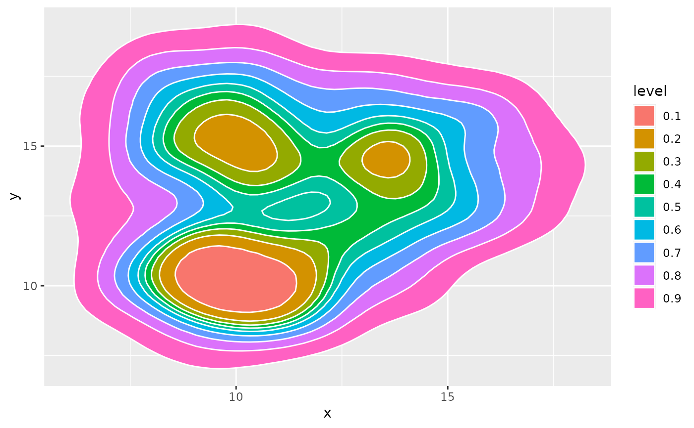
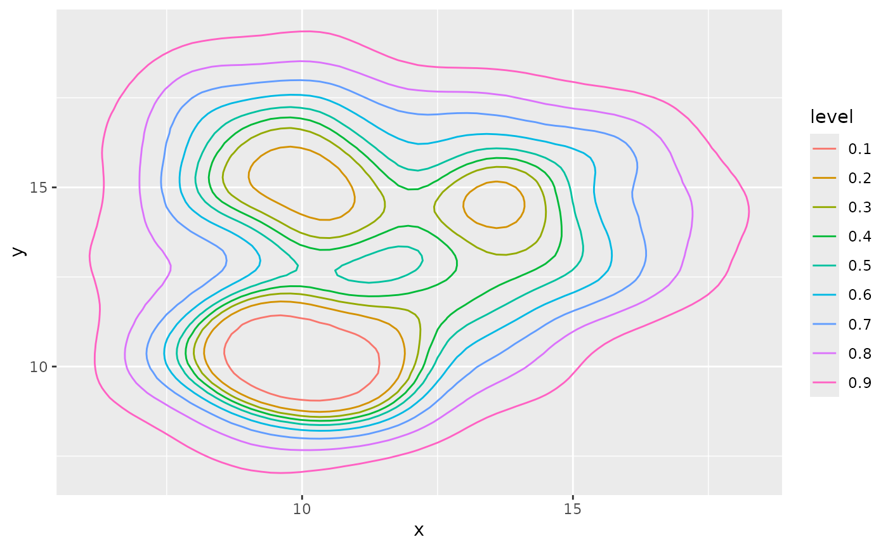

stat_prob_2d.Rdprob density
stat_prob_2d(
mapping = NULL,
data = NULL,
geom = "density_2d",
position = "identity",
...,
contour = TRUE,
contour_var = "density",
n = 100,
h = NULL,
adjust = c(1, 1),
na.rm = FALSE,
show.legend = NA,
inherit.aes = TRUE
)Set of aesthetic mappings created by aes(). If specified and
inherit.aes = TRUE (the default), it is combined with the default mapping
at the top level of the plot. You must supply mapping if there is no plot
mapping.
The data to be displayed in this layer. There are three options:
If NULL, the default, the data is inherited from the plot
data as specified in the call to ggplot().
A data.frame, or other object, will override the plot
data. All objects will be fortified to produce a data frame. See
fortify() for which variables will be created.
A function will be called with a single argument,
the plot data. The return value must be a data.frame, and
will be used as the layer data. A function can be created
from a formula (e.g. ~ head(.x, 10)).
Use to override the default connection between geom_prob_2d() and stat_prob_2d.
Position adjustment, either as a string naming the adjustment
(e.g. "jitter" to use position_jitter), or the result of a call to a
position adjustment function. Use the latter if you need to change the
settings of the adjustment.
Arguments passed on to geom_contour
binwidthThe width of the contour bins. Overridden by bins.
binsNumber of contour bins. Overridden by breaks.
breaksOne of:
Numeric vector to set the contour breaks
A function that takes the range of the data and binwidth as input and returns breaks as output. A function can be created from a formula (e.g. ~ fullseq(.x, .y)).
Overrides binwidth and bins. By default, this is a vector of length
ten with pretty() breaks.
If TRUE, contour the results of the 2d density
estimation.
Character string identifying the variable to contour
by. Can be one of "density", "ndensity", or "count". See the section
on computed variables for details.
Number of grid points in each direction.
Bandwidth (vector of length two). If NULL, estimated
using MASS::bandwidth.nrd().
A multiplicative bandwidth adjustment to be used if 'h' is
'NULL'. This makes it possible to adjust the bandwidth while still
using the a bandwidth estimator. For example, adjust = 1/2 means
use half of the default bandwidth.
If FALSE, the default, missing values are removed with
a warning. If TRUE, missing values are silently removed.
logical. Should this layer be included in the legends?
NA, the default, includes if any aesthetics are mapped.
FALSE never includes, and TRUE always includes.
It can also be a named logical vector to finely select the aesthetics to
display.
If FALSE, overrides the default aesthetics,
rather than combining with them. This is most useful for helper functions
that define both data and aesthetics and shouldn't inherit behaviour from
the default plot specification, e.g. borders().
library(ggplot2)
# Data
n = 200
set.seed(1)
a <- data.frame( x=rnorm(n, 10, 1.9), y=rnorm(n, 10, 1.2) )
b <- data.frame( x=rnorm(n, 14.5, 1.9), y=rnorm(n, 14.5, 1.9) )
c <- data.frame( x=rnorm(n, 9.5, 1.9), y=rnorm(n, 15.5, 1.9) )
data <- rbind(a,b,c)
# Show the area only
ggplot(data, aes(x=x, y=y) ) +
stat_prob_2d(aes(fill = ..level.., color =..level.. ), geom = "polygon")
#> Warning: The dot-dot notation (`..level..`) was deprecated in ggplot2 3.4.0.
#> ℹ Please use `after_stat(level)` instead.
ggplot(data, aes(x=x, y=y) ) +
stat_prob_2d(aes(fill = ..level..), geom = "polygon", color = "white")

ggplot(data, aes(x=x, y=y) ) +
stat_prob_2d(aes(color =..level.. ), geom = "path")
